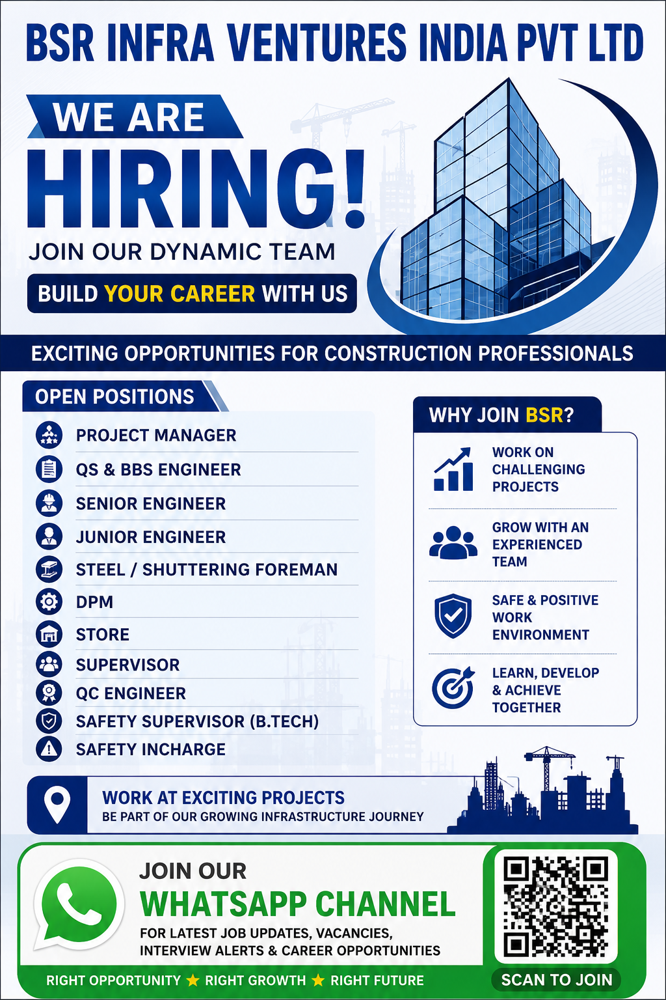

BSR Infra Ventures India Pvt Ltd has announced multiple employment opportunities for experienced construction and infrastructure professionals. The recruitment includes several positions covering project management, engineering, quantity surveying, billing, supervision, quality control, stores and safety functions. Candidates with suitable qualifications and relevant construction experience can consider applying for the appropriate position.
Company: BSR Infra Ventures India Pvt Ltd
Industry: Construction & Infrastructure
Location shown in poster: Hyderabad, Telangana
Recruitment Type: Construction Project Hiring
Experience: Depends on the position
Application: CV / Resume Submission
Get regular updates about construction jobs, engineering vacancies, walk-in interviews, supervisor jobs, site engineer vacancies and other career opportunities.
Join WhatsApp ChannelBSR Infra Ventures India Pvt Ltd is looking for professionals who can contribute to construction and infrastructure projects. The vacancies shown in the recruitment poster cover a wide range of site and project functions. Depending on the position, candidates may be responsible for project execution, engineering coordination, quantity measurement, billing support, site supervision, quality control, safety management, stores management and coordination with different construction teams.
This recruitment can be useful for professionals who already have experience in building construction, civil engineering, structural work, quantity surveying, project coordination, site execution, quality inspection and construction safety. Candidates should carefully review their qualifications and experience before submitting an application.
Construction projects require professionals who can work effectively with engineers, supervisors, contractors, subcontractors, vendors and other project stakeholders. Good communication, technical knowledge, site discipline and the ability to complete work according to project requirements are important qualities for many of the advertised roles.
The Project Manager position is suitable for experienced construction professionals who can manage project execution and coordinate different teams. A Project Manager may be responsible for monitoring construction progress, coordinating engineering and site teams, reviewing schedules, handling project requirements and ensuring that work is completed according to project objectives.
Candidates applying for this position should preferably have strong construction project experience and the ability to coordinate multiple activities at the same time. Experience in managing manpower, subcontractors, materials, schedules and site-related issues can be valuable.
The QS & BBS Engineer role is relevant for professionals experienced in quantity surveying, bar bending schedules, measurements, quantity calculation and construction documentation. Candidates may be involved in preparing and checking quantities, reviewing drawings, calculating reinforcement requirements and supporting billing or estimation work.
Applicants should have a good understanding of construction drawings, measurements and reinforcement-related documentation. Accuracy is important because quantity and billing information directly affects project planning and commercial activities.
Senior Engineers are generally responsible for supervising technical construction activities and coordinating site execution. Candidates should have practical experience in their respective engineering field and should be comfortable working with site teams.
Responsibilities can include checking drawings, monitoring work quality, coordinating manpower, resolving site issues and communicating progress to senior project management.
The Junior Engineer position can be suitable for engineering professionals who have relevant site experience and are looking to continue their career in construction. Junior Engineers may support senior engineers and supervisors with daily site execution, measurements, documentation and coordination.
Candidates should have a basic understanding of construction practices, drawings, measurements, safety procedures and site coordination.
The Steel or Shuttering Foreman position is intended for professionals with hands-on construction experience. The role can involve supervising steel reinforcement and shuttering activities, coordinating workers, checking work against drawings and ensuring that site activities are completed according to project requirements.
Practical knowledge of reinforcement work, shuttering systems, concrete construction and manpower coordination can be useful for this position.
The DPM position is included among the vacancies shown in the poster. Candidates should verify the exact responsibilities, qualification requirements and experience criteria with the recruiting team before applying, as the detailed job description is not provided in the poster.
Store professionals are responsible for supporting material management at construction projects. Typical activities may include receiving materials, maintaining stock records, issuing materials to site teams, checking quantities and coordinating with project departments.
Candidates with construction-store experience and knowledge of material documentation may be suitable for this position.
Supervisors play an important role in coordinating daily site activities. The position may involve allocating workers, monitoring progress, checking workmanship and communicating site requirements to engineers and project management.
Candidates with practical construction experience and good manpower management skills can consider this opportunity.
QC Engineers are responsible for supporting quality control activities on construction projects. Their work can include inspections, documentation, quality checks, coordination with site teams and verification that construction work follows approved specifications.
Candidates should have relevant quality-control experience and should be comfortable maintaining inspection and project documentation.
The Safety Supervisor position specifically mentions B.Tech in the poster. Safety professionals are responsible for supporting safe working practices at construction sites. Activities may include safety inspections, toolbox meetings, identifying unsafe conditions and coordinating corrective actions.
Candidates should understand construction-site safety requirements and should be able to communicate safety instructions effectively to workers and supervisors.
The Safety Incharge position is suitable for professionals experienced in construction safety management. The role can involve monitoring safety compliance, conducting inspections, coordinating safety activities and supporting project teams in maintaining safe working conditions.
The recruitment poster displays the location as BSR Infra Ventures India Pvt Ltd, Radha Spaces Building, 3rd Floor, Office No. 314, Gandipet X Road, Hyderabad. Candidates should verify the current interview or reporting location directly with the recruiting team before travelling, as project or office locations may change.
Candidates from Hyderabad and nearby areas may find the opportunity particularly convenient, while applicants from other locations should confirm whether relocation or project-site deployment is required.
Eligibility requirements can vary according to the position. Candidates should have the educational qualification and practical experience relevant to the role they are applying for. Engineering positions may require an appropriate engineering qualification, while foreman, supervisor and other site positions may focus more strongly on practical construction experience.
Applicants should provide accurate information regarding total work experience, current designation, previous companies and project experience. Candidates with relevant construction project exposure can highlight major responsibilities and completed projects in their CV.
Interested candidates can send their updated CV or resume to the email address mentioned in the recruitment poster.
Email: bsrinfra.hr@gmail.com
Phone: +91 8179935544
Candidates should mention the position they are applying for and include their relevant experience in the CV. Before travelling for an interview or joining a project, candidates should confirm the latest recruitment details directly with the recruiting party.
Send CV by Email:
Click here to email your CV
Call Recruitment Contact:
Click here to call +91 8179935544
WhatsApp:
Click here to WhatsApp
Candidates should prepare a clear and updated resume before applying. The CV should include the candidate's full name, contact information, educational qualification, total experience, current designation, previous employment history and important project experience.
For engineering positions, applicants should clearly mention their engineering qualification and the type of construction projects they have worked on. Candidates with experience in residential buildings, commercial buildings, infrastructure, industrial construction, structural works or other relevant projects should provide concise details of their responsibilities.
For QS and BBS positions, candidates should highlight quantity measurement, estimation, reinforcement calculation, billing and BBS experience. QC candidates should mention inspection, quality documentation and testing experience. Safety professionals should highlight their safety qualifications, site inspections, toolbox talks, safety documentation and previous project exposure.
The exact selection process may depend on the position and current project requirement. Candidates may be contacted for resume screening, HR discussion, technical interview or further verification. Applicants should keep their documents ready and provide accurate information during the selection process.
During an interview, candidates may be asked about previous project experience, technical responsibilities, manpower handling, drawings, quality procedures, safety practices, measurements, billing or other job-specific activities.
Construction projects involve multiple activities that need to be completed according to drawings, specifications, schedules and safety requirements. Experienced professionals can contribute by understanding site conditions, coordinating workers and subcontractors, identifying problems and communicating effectively with project management.
For this reason, candidates should not only mention the number of years they have worked but should also explain the type of projects they have handled. Specific project experience can help recruiters understand whether a candidate is suitable for a particular vacancy.
The vacancies may be relevant to experienced construction professionals including project managers, civil engineers, quantity surveyors, BBS engineers, senior engineers, junior engineers, foremen, supervisors, quality-control professionals, store personnel and safety professionals. Candidates should apply only for positions that match their actual qualification and experience.
Construction remains an important sector for engineering and technical professionals. Site-based jobs provide opportunities to develop experience in project execution, quality management, safety, planning, quantity